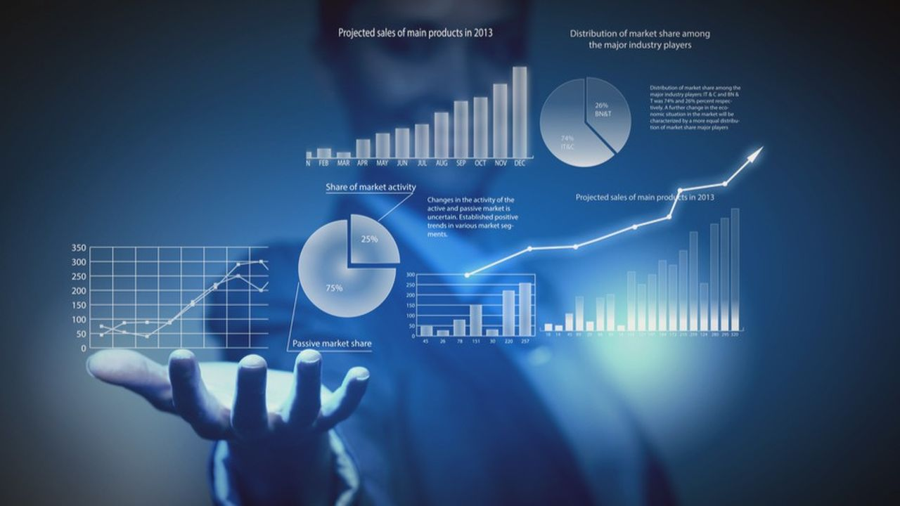

Database Science

Knowledge in data science and databases is a key skill in computer science that involves understanding and manipulating large amounts of data to extract meaningful information.
Here's a general description of this skill:
- Data Science: This involves using statistical techniques, machine learning algorithms, and other methods to analyze and interpret complex data sets in order to discover
trends, patterns, and insights. Data science also requires knowledge of programming, often in Python or R.
- Databases: Database knowledge includes understanding relational and non-relational database concepts,
including SQL query language for querying databases, database design, and database management.
- Data Cleaning: Raw data often needs to be cleaned and transformed before analysis. This can involve dealing with missing values, detecting and handling anomalies,
and transforming data into a suitable format.
- Data Visualization: Data visualization skills are crucial for presenting results in a comprehensible way.
This can involve using tools and libraries to create graphs, dashboards, and other visual representations of data.
In summary, the skill in data science and databases combines data analysis, database management, programming, and visualization to extract meaningful information from large amounts of data.